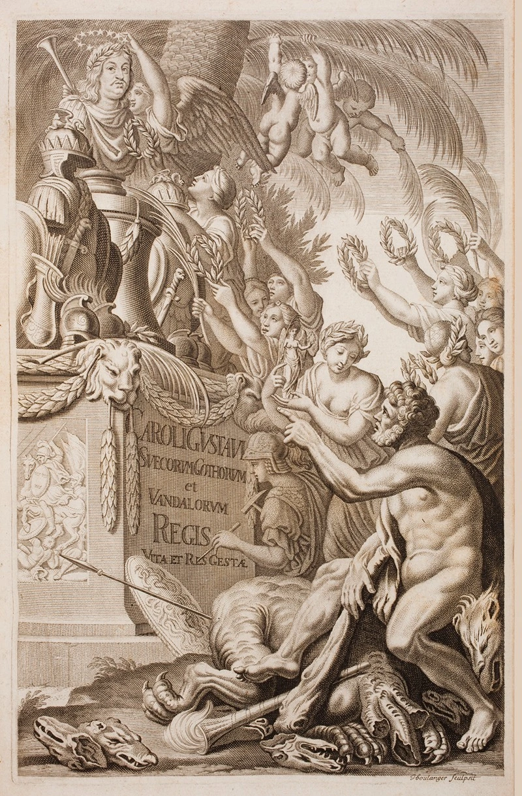
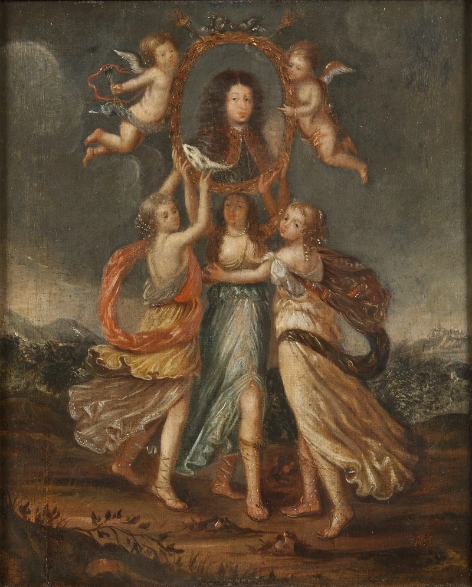
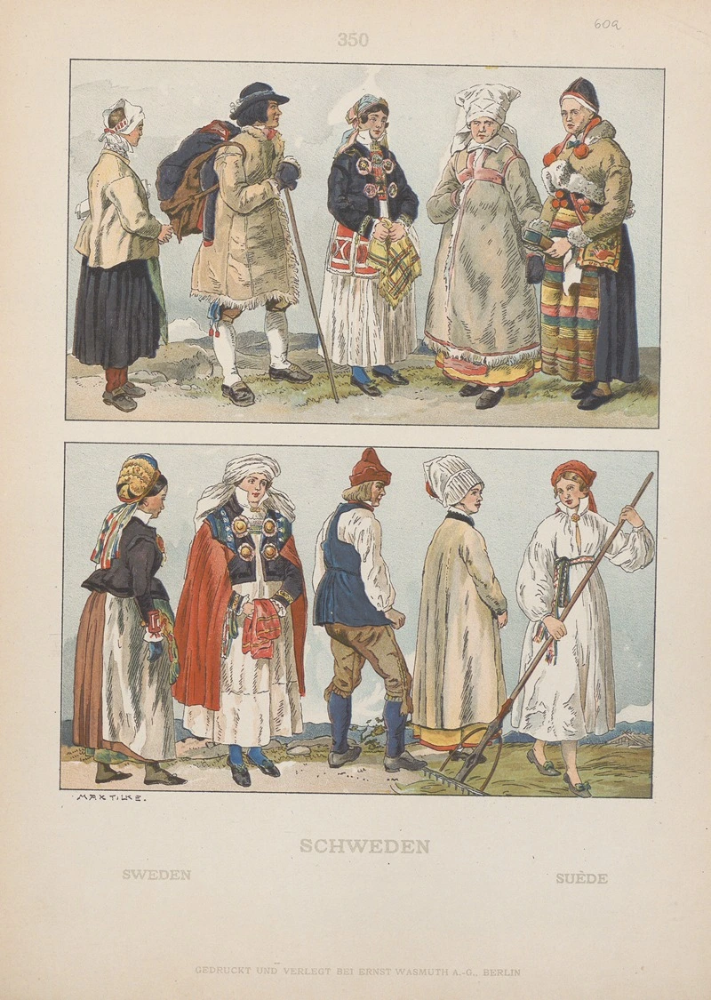
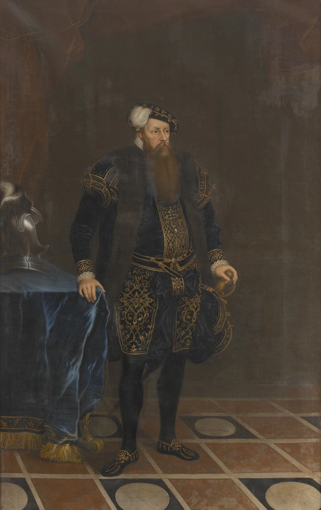
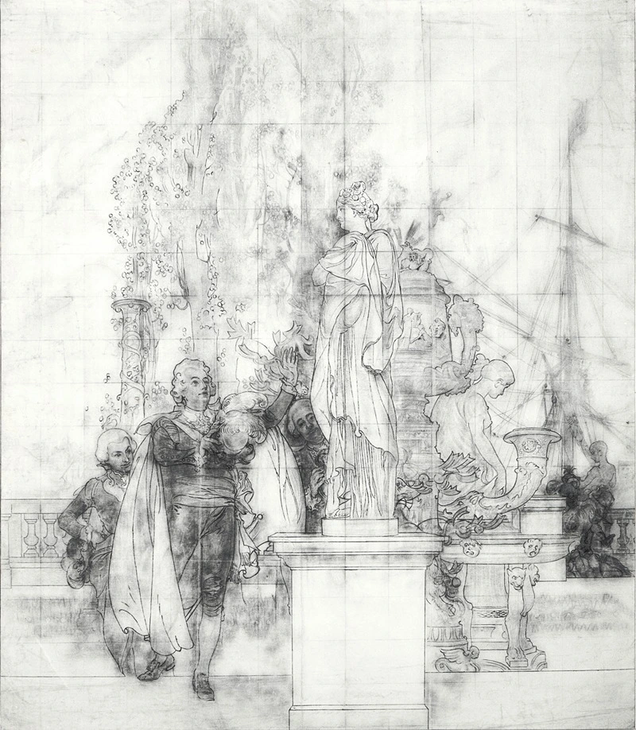

Slaget vid Chemulpo den 9 februari 1904 markerade en dramatisk start på det rysk-japanska
kriget
och har genom historien förevigats som en symbol för Japans militära modernisering. När den
japanska flottan, under ledning av amiral Uryū Sotokichi, konfronterade de ryska fartygen
utanför Incheons hamn, var det inte bara en kamp om sjöherravälde utan även en
styrkedemonstration som skakade de dåtida stormakterna.
Trots att de ryska besättningarna på
kryssaren Varyag och kanonbåten Korietz befann sig i ett hopplöst underläge, valde de att
segla
ut ur hamnen för att möta den japanska eskadern i en öppen strid. Efter en intensiv
eldstrid,
där de ryska fartygen led svåra skador, tvingades de retirera tillbaka till hamnen. För att
förhindra att skeppen föll i fiendens händer valde ryssarna att sänka sina egna fartyg, en
handling som senare kom att hyllas för sitt hjältemod även av motståndarsidan.
Adolf Rosenberg, som verkade i Berlin under det sena 1800-talet, var en av de mest inflytelserika konsthistorikerna när det gällde att systematisera och dokumentera visuell kultur. Hans koppling till Sverige år 1905 är främst förknippad med det monumentala verket Geschichte des Kostüms, där han i en serie noggranna färgplanscher kategoriserade världens dräkthistoria. Vid denna tidpunkt fanns ett stort europeiskt intresse för det nordiska och det genuina, vilket gjorde att de svenska folkdräkterna fick en framträdande plats i hans internationella kartläggning.I sitt arbete beskrev Rosenberg inte bara klädernas snitt utan även deras kulturella betydelse, där de svenska motiven ofta representerade en kombination av bondeestetik och historisk kontinuitet. Genom att inkludera Sverige i sitt storverk bidrog han till att sprida en bild av den svenska allmogekulturen till en akademisk och konstintresserad publik i Europa. Detta skedde i en brytningstid då nationalromantiken stod på sin topp och Sverige sökte sin moderna identitet, samtidigt som forskare som Rosenberg arbetade med att katalogisera det förflutna innan industrialismen förändrade klädskicket för gott.

denna beskrivning syftar på den magnifika titelsidan till det monumentala verket Suecia Antiqua et Hodierna (Forntida och nuvarande Sverige), som påbörjades av arkitekten och officeren Erik Dahlbergh. Illustrationen, som dateras till 1696, är ett av den svenska stormaktstidens mest emblematiska konstverk och skapades för att förhärliga det svenska riket och dess monark, Karl XI (vid tiden benämnd Carl Gustaf). Titelsidan fungerar som en visuell hyllning där kungens byst är centralt placerad, omgiven av en komplex samling allegoriska figurer som representerar dygder, segrar och rikets storhet.Verket som helhet var en del av en medveten statlig propaganda för att visa upp Sverige som en modern och ärorik europeisk stormakt. På den aktuella titelsidan ser man hur gestalter som Fama, ryktets gudinna, och olika krigiska och fredliga genier samverkar för att rama in kungagestalten mot en fond av antika arkitekturelement och svenska symboler. Gravyren utfördes av skickliga europeiska konstnärer, i detta fall sannolikt under ledning av den franske gravören Jean Le Pautre eller Willem Swidde, vilka anlitades för att ge de svenska motiven en internationell och sofistikerad prägel.
Under den gustavianska eran, mer specifikt år 1776, skapade konstnären Ulrika Pasch ett betydelsefullt porträtt av Gustav Vasa som en del av tidens stora intresse för den svenska historien. Som en av sin tids främsta porträttörer och den första kvinnliga ledamoten i Konstakademien, fick Pasch uppdraget att avbilda riksgrundaren för att ingå i de kungliga samlingarna, vilket var en del av Gustav III:s medvetna strategi att stärka monarkins ställning genom att knyta an till tidigare starka regenter.Målningen utfördes postumt, över två hundra år efter kungens död, och fungerade som en länk mellan stormaktstidens arv och den upplysningstida estetiken. Genom att avbilda Gustav I med den värdighet och de attribut som anstod en landsfader, bidrog Pasch till att kanonisera bilden av kungen som det moderna Sveriges arkitekt. Verket, som idag hänger i Statens porträttsamling på Gripsholms slott, vittnar om hur 1700-talets konstnärer användes för att levandegöra historien och skapa en visuell kontinuitet i den svenska regentlängden.

David Klöcker Ehrenstrahl (Swedish, 1628 till 1698)Målningen "Tre allegoriska figurer bärande Karl XI:s porträtt" är ett litet men betydelsefullt verk av den svenska barockens främste hovmålare, David Klöcker Ehrenstrahl. Verket utfördes i olja på trä och är en del av den omfattande produktion som Ehrenstrahl skapade för att förhärliga det svenska kungahuset under stormaktstiden.Målningen föreställer tre unga kvinnliga gestalter som fungerar som allegorier för dygder eller rikets välgång. De svävar i en molnformation och håller tillsammans upp en infattad porträttmedaljong av kung Karl XI. Detta sätt att presentera en regent, buren av personifierade dygder, var ett klassiskt grepp inom barockens hyllningskonst för att signalera att kungens makt var gudomligt välsignad och vilade på moralisk grund. Ehrenstrahl, som ofta kallas "den svenska målarkonstens fader", var en mästare på dessa komplexa kompositioner där mytologi och politik vävdes samman.
Carl Larsson skapade under mitten av 1890-talet en storslagen visuell hyllning till Gustav III:s betydelse för det svenska kulturlivet genom sin freskmålning i Nationalmuseums trapphall. Motivet skildrar kungen som en upplyst monark och mecenat i färd med att inspektera de antika marmorskulpturer som han köpt in under sin resa till Italien på 1780-talet, inköp som senare kom att utgöra grunden för kungens antikmuseum och därefter Nationalmuseums samlingar. Genom att avbilda kungen omgiven av både antika mästerverk och hovets främsta kulturpersonligheter, lyckades Larsson förena den historiska händelsen med en symbolisk hyllning till museets egen tillkomst.Målningen är utförd i en ljus och luftig palett som kännetecknar Carl Larssons offentliga konst, där han lät sig inspireras av italienskt freskomåleri men anpassade det till en svensk kontext. Verket fungerar som en länk mellan det förflutna och museets samtid, där Gustav III presenteras som den visionär som lade fundamentet för den svenska konstscenen. Placeringen av målningen i hjärtat av museibyggnaden påminner besökaren om att institutionen inte bara är ett förvaringsställe för konst, utan resultatet av en lång historisk tradition av samlande och kungligt beskydd.